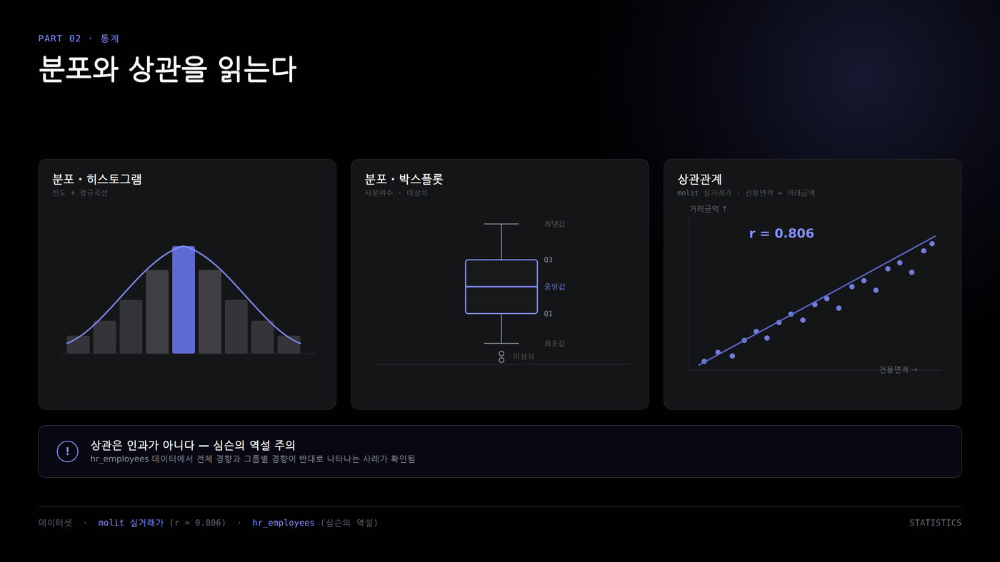

중심·산포·분포·박스플롯
평균만 보지 않고 보통값, 퍼짐, 이상치도 함께 읽는다.
학습 후 할 수 있는 것
- 평균·중앙값·최빈값을 구분한다
- 범위와 표준편차로 퍼짐을 읽는다
- 박스플롯으로 이상치 후보를 찾는다
- 평균이 왜곡되는 사례를 설명한다
숫자 한 열을 읽는 지도

숫자 한 열을 볼 때는 평균 하나만 보는 것이 아니라, 이 숫자들이 어디쯤 모여 있고 얼마나 흩어져 있는지를 함께 봅니다. 키를 잴 때 반 평균 키만 말하면 반 분위기를 다 알 수 없는 것처럼, 데이터도 평균만으로는 부족할 때가 많습니다.
그림에서 중심은 대표값입니다. 평균은 전체 합계를 개수로 나눈 값이고, 중앙값은 숫자를 작은 값부터 큰 값까지 줄 세웠을 때 가운데 값입니다. 최빈값은 가장 자주 나온 값입니다. 셋 다 대표값이지만 서로 대답하는 질문이 조금씩 다릅니다.
숫자 한 열을 읽는 지도이어서
산포는 값들이 얼마나 퍼져 있는지 보는 부분입니다. 표준편차는 평균 주변에 값들이 얼마나 모여 있거나 흩어져 있는지를 알려 줍니다. 분포는 숫자들이 어떤 모양으로 놓여 있는지 보는 것이고, 박스플롯은 그 분포를 한 장으로 접어 보여 주는 그림이라고 보면 됩니다.
대표값마다 역할이 다르다
평균은 전체 수준, 중앙값은 보통의 위치, 최빈값은 가장 자주 나온 값을 나타낸다.
- 평균: 전체 합계 ÷ 개수
- 중앙값: 순서대로 세웠을 때 가운데
- 최빈값: 가장 자주 나온 값
- 평균이 높으면 큰 값이 끌어올렸을 수 있다
대표값은 긴 숫자 목록을 한 숫자로 말해 보려는 방법입니다. 평균은 모든 값을 더한 뒤 개수로 나눕니다. 전체 수준을 빠르게 볼 때 좋지만, 아주 큰 값이나 아주 작은 값이 들어오면 그쪽으로 끌려갑니다.
중앙값은 숫자를 순서대로 세웠을 때 가운데에 있는 값입니다. 사전에서 단어를 찾듯이 줄을 세운 다음 딱 가운데 위치를 보는 겁니다. 그래서 극단적으로 큰 값이 몇 개 있어도 보통의 위치를 비교적 차분하게 보여 줍니다.
최빈값은 가장 많이 반복된 값입니다. 주문금액처럼 5,500원, 6,500원 같은 금액이 여러 번 나오는 자료에서는 “가장 흔한 주문금액”을 말해 줄 수 있습니다. 그래서 평균, 중앙값, 최빈값은 서로 경쟁하는 숫자가 아니라 각자 맡은 역할이 다른 도구라고 보시면 됩니다.
평균 연봉은 개발본부가 높다
이 막대그래프는 직원 연봉 자료에서 부서별 평균 연봉을 비교한 그림입니다. 막대가 길수록 그 부서의 평균 연봉이 높다는 뜻입니다. 평균은 그 부서 사람들의 연봉을 모두 더한 뒤 직원 수로 나눈 값입니다.
가장 먼저 볼 곳은 가장 긴 막대입니다. 개발본부가 74,190,541원으로 가장 높고, 데이터전략팀은 68,902,000원, 영업본부는 63,087,500원입니다. 반대로 고객운영팀은 53,445,625원으로 가장 낮습니다.
평균 연봉은 개발본부가 높다이어서
다만 평균 연봉이 74,190,541원이라고 해서 개발본부 직원 대부분이 정확히 그 금액을 받는다는 뜻은 아닙니다. 평균은 저울에 전체 연봉을 한꺼번에 올려 놓고 사람 수로 나눈 숫자입니다. 그래서 부서의 전체 수준을 보는 데 좋지만, 보통 직원의 위치는 중앙값도 함께 봐야 합니다.
중앙값도 같은 순서다
이 그래프는 부서별 중앙값을 보여 줍니다. 중앙값은 각 부서의 연봉을 낮은 금액부터 높은 금액까지 줄 세웠을 때 가운데에 오는 값입니다. 평균이 전체를 나눠 보는 값이라면, 중앙값은 줄을 세워 가운데 사람을 보는 값입니다.
개발본부의 중앙값은 73,950,000원으로 가장 높습니다. 데이터전략팀은 68,450,000원, 영업본부는 62,700,000원, 인사총무팀은 59,100,000원, 고객운영팀은 53,300,000원입니다. 평균 그래프와 순서가 같습니다.
중앙값도 같은 순서다이어서
이렇게 평균과 중앙값을 나란히 보면 판단이 단단해집니다. 개발본부가 평균만 높은 것이 아니라, 가운데 위치로 보아도 높습니다. 반대로 고객운영팀은 평균도 낮고 중앙값도 낮아서, 부서 전체의 연봉 수준이 상대적으로 낮다고 읽을 수 있습니다.
퍼짐은 데이터전략팀이 크다
이 그래프는 평균 연봉이 아니라 표준편차를 비교합니다. 표준편차는 값들이 평균 주변에서 얼마나 흩어져 있는지를 나타내는 숫자입니다. 입문 단계에서는 공식보다 “평균 근처에 모여 있나, 넓게 퍼져 있나”를 읽으면 됩니다.
데이터전략팀의 표준편차가 8,955,824원으로 가장 큽니다. 인사총무팀은 8,771,463원, 고객운영팀은 8,456,056원, 개발본부는 8,094,278원, 영업본부는 8,070,936원입니다. 막대가 길수록 같은 부서 안에서도 낮은 연봉과 높은 연봉의 차이가 더 넓게 섞여 있다는 뜻입니다.
퍼짐은 데이터전략팀이 크다이어서
표준편차가 크다고 해서 무조건 나쁘다는 뜻은 아닙니다. 직급 차이가 크거나, 경력 차이가 크거나, 성과 보상 차이가 있을 수도 있습니다. 평균은 부서의 높이를 보여 주고, 표준편차는 그 안이 얼마나 고르게 또는 넓게 퍼져 있는지 보여 준다고 보시면 됩니다.
이상치 후보는 개발본부가 많다
이 그래프는 부서별 이상치 후보가 몇 건인지 보여 줍니다. 이상치 후보는 다른 값들과 비교했을 때 유난히 낮거나 높은 값입니다. 여기서는 박스플롯에서 쓰는 IQR 기준으로 평소 범위 밖에 있는 값을 후보로 잡았습니다.
개발본부가 6건으로 가장 많습니다. 영업본부와 인사총무팀은 각각 3건, 데이터전략팀은 2건, 고객운영팀은 0건입니다. 막대가 0건이라는 말은 고객운영팀에 극단적인 값이 전혀 없다는 확정이 아니라, 이 기준으로 잡힌 후보가 없다는 뜻입니다.
이상치 후보는 개발본부가 많다이어서
이상치 후보는 바로 지우는 값이 아닙니다. 높은 연봉을 받는 임원이나 고성과자일 수도 있고, 입력 오류일 수도 있습니다. 그래서 따로 찍힌 점을 보면 “삭제해야겠다”보다 먼저 “왜 이렇게 높거나 낮을까?” 하고 원인을 확인해 보셔야 합니다.
박스플롯은 분포를 접어 보여준다
| 요소 | 뜻 |
|---|---|
| 박스 아래쪽 | 1사분위수 |
| 박스 안의 선 | 중앙값 |
| 박스 위쪽 | 3사분위수 |
| 박스 높이 | 가운데 50% 퍼짐 |
| 따로 찍힌 점 | 이상치 후보 |
수염은 일반적인 최솟값과 최댓값 범위를 나타낸다.
박스플롯은 숫자 목록을 작은 상자 하나로 접어서 보여 주는 그림입니다. 평균 막대그래프처럼 한 숫자만 보여 주는 것이 아니라, 가운데가 어디인지, 중간 값들이 얼마나 퍼져 있는지, 유난히 튀는 값이 있는지를 같이 보여 줍니다.
박스 안의 선은 중앙값입니다. 박스 아래쪽은 1사분위수로 하위 25% 지점이고, 박스 위쪽은 3사분위수로 상위 25% 지점입니다. 그래서 박스의 높이는 가운데 50% 값들이 얼마나 넓게 퍼져 있는지를 뜻합니다.
수염은 일반적인 최솟값과 최댓값 범위를 보여 줍니다. 수염 밖에 따로 찍힌 점은 이상치 후보입니다. 박스가 위쪽에 있으면 전반적인 수준이 높고, 박스가 길면 값들이 넓게 퍼져 있다고 읽어 보세요.
전체 주문금액은 평균이 높다
이 그래프는 카페 주문 자료에서 전체 주문금액을 여러 대표값으로 본 그림입니다. 평균, 중앙값, 최빈값, 최솟값, 최댓값을 한 줄에 놓고 비교합니다. 같은 주문금액 자료라도 어떤 숫자로 보느냐에 따라 느낌이 달라집니다.
평균은 8,681.17원입니다. 그런데 중앙값은 6,500원이고, 최빈값은 5,500원입니다. 여기서 중앙값은 주문금액을 작은 것부터 큰 것까지 줄 세웠을 때 가운데 값이고, 최빈값은 가장 자주 나온 주문금액입니다.
전체 주문금액은 평균이 높다이어서
평균이 중앙값보다 높다는 것은 큰 주문들이 평균을 위로 끌어올렸을 가능성이 있다는 뜻입니다. 최댓값이 19,500원까지 있기 때문에, 몇 개를 한 번에 주문한 건들이 평균에 들어가면서 보통 주문보다 평균이 더 비싸 보일 수 있습니다.
평균 왜곡 후보는 치즈케이크다
이 그래프는 상품별로 평균 주문금액에서 중앙값을 뺀 차이를 보여 줍니다. 막대가 길수록 평균이 보통 위치인 중앙값보다 많이 높다는 뜻입니다. 이런 상품은 평균만 보면 보통 주문금액을 비싸게 느낄 수 있습니다.
치즈케이크의 차이가 4,240.92원으로 가장 큽니다. 레몬에이드는 3,940.99원, 크로플은 3,612.48원, 바닐라라떼는 3,598.18원, 복숭아아이스티는 3,551.38원입니다. 치즈케이크가 평균 왜곡을 살펴볼 좋은 사례입니다.
평균 왜곡 후보는 치즈케이크다이어서
여기서 왜곡이라는 말은 데이터가 틀렸다는 뜻이 아닙니다. 평균이라는 계산 방식이 큰 주문금액의 영향을 많이 받는다는 뜻입니다. 그래서 “보통 손님은 얼마를 주문하나요?”라고 묻는다면 평균만 보지 말고 중앙값과 최빈값을 같이 확인해야 합니다.
수량 분포가 평균을 끌어올린다
이 그래프는 치즈케이크 주문이 몇 개짜리 주문으로 이루어졌는지 보여 줍니다. 1개 주문이 331건으로 가장 많고, 2개 주문이 191건, 3개 주문이 111건입니다. 막대의 높이는 주문 건수입니다.
치즈케이크는 1개 주문이 가장 많기 때문에 중앙값과 최빈값이 6,500원입니다. 그런데 2개 주문 191건과 3개 주문 111건이 함께 들어오면 더 큰 주문금액이 평균 계산에 반영됩니다. 2개와 3개 주문을 합치면 302건입니다.
수량 분포가 평균을 끌어올린다이어서
그래서 치즈케이크의 평균 주문금액은 10,740.92원까지 올라가지만, 보통의 위치를 보면 6,500원이 더 자연스럽습니다. 매출 규모를 볼 때는 평균이 도움이 되고, 보통 주문금액을 설명할 때는 중앙값과 최빈값을 함께 말해 보세요.
오늘의 미션
정리
- 평균은 전체 수준을 빠르게 보여 준다.
- 중앙값과 최빈값은 보통의 위치를 보완한다.
- 표준편차와 박스플롯은 퍼짐과 이상치를 보여 준다.